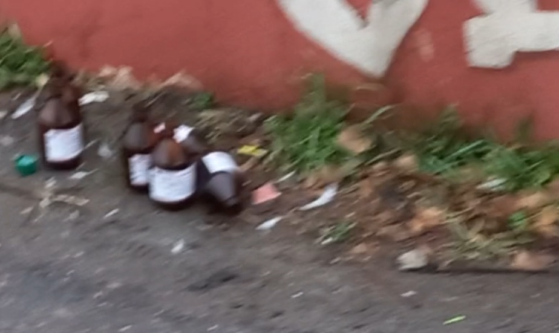
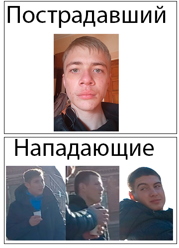
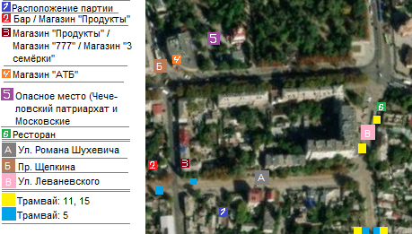
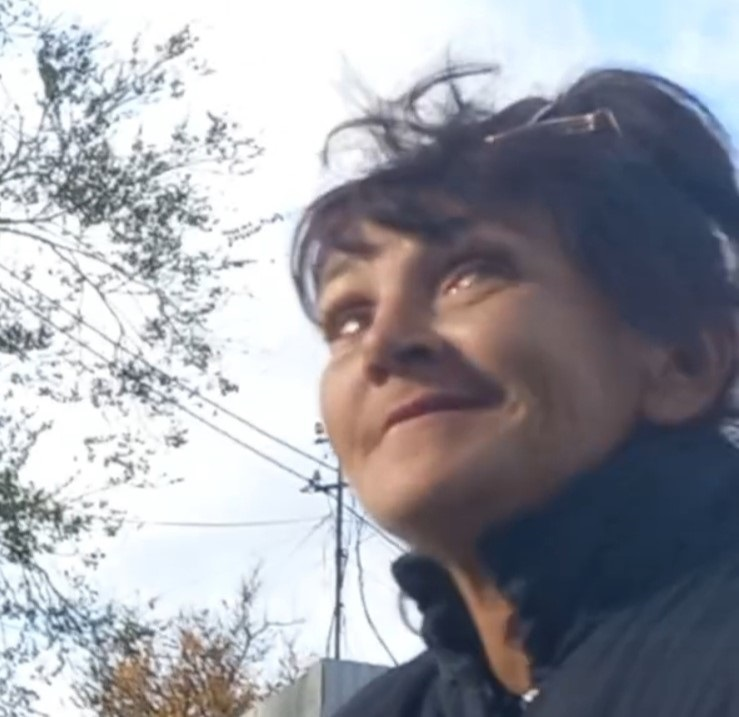
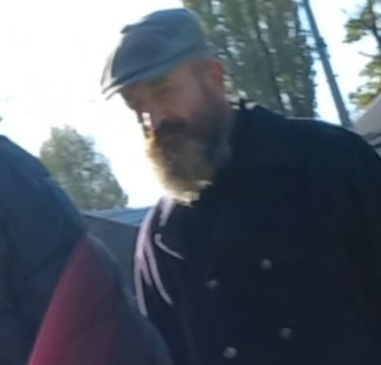

Чтобы не было беды, чтобы не было войны
Во всём мире
|
Сигареты, алкоголь - туда в магазин "Продукты"
Чтобы не было беды, чтобы не было войны
Во всём мире
Главная:16 декабря 2022 года: На сайте мы создали стену лучших где будут самые лучшие люди на нашем районе и стену позора для того чтобы все видели кто долбаёб на нашем Чечеловском районе. Если вы есть в стене лучших тот может собой гордиться, а если вы в стене позора то задайте себе вопрос: Почему я в стене позора?. 18 октября 2022 года: Теперь мы создали рекламный банер для рекламирование нашего сайта. Вверх Новости:29 декабря 2022 года: На улице Романа Шухевича (ул. Бабушкина) чуть не перешла драка в майдан. Два мужика начали сильно орать кто даун.  16 декабря 2022 года: На улице Леваневского алкаши перешли из алкоголя к медицинскому спирту.  7 ноября 2022 года: На улице им. Романа Шухевича (или старое название улица Бабушкина), возле магазина "3 семёрки" мужики напали на журналиста который являеться депутатом партии "Оппозиционная партия из Чечеловки". 4 ноября 2022 года: УРААААААА!!! Вернулась наша Елена Ивановна. Она была в селе Дворянивка возле села Обуховки. К сожалению она на 2 дня и потом опять вернёться в село Дворянивка. 4 ноября 2022 года: ВНИМАНИЕ!!! На проспекте Сергея Нигояна есть с виду обычная церковь но на самом деле это пункт из Москвы. Они говорят что мы обычная гумонитарная помощь но на самом деле гумонитарная помощь в Украине писалось бы на украинском а не на русском. Народ, бутье осторожы от помощи огресора. Москва специально делает чтобы заманить всех в заблуждение а потом отправляет воевать против Украины. 26 октября 2022 года: На улице им. Романа Шухевича (или старое название улица Бабушкина), в подьездах дома 28/32 начали менять окна. Поздравляем этот дом, наконецто меняют окна которым 70 лет и разломались после взрыва. 
25 октября 2022 года: На проспекте Нигояна, начала действовать религиозная тоталитарная секта. Там начали выдавать газеты с религиозной пропогандой под названием библийный курс. Такие курсы это и есть тоталитарные секты. 24 октября 2022 года: На улице им. Романа Шухевича (или старое название улица Бабушкина), Пьяный чувак ходил и матерился на всю улицу. Слышали все кто там был. К сожалению видео нету, но этот тот алкоголик в чёрной кофте, чёрных штанах с разбитым носом и без шапки который дрался с другим алкоголиком которые были в этом видео. 
21 октября 2022 года: На улице им. Романа Шухевича (или старое название улица Бабушкина), Машина Днепрводоканала сливала мочу. Есть даже снимок что это было. 18 октября 2022 года: На улице Красночечеловской была драка. Оказалось два алкоголика добухались и жостко подрались что один из них разбил нос другому алкоголику. Есть даже видео что там было. 3 октября 2022 года:
16 сентября 2022 года: Когда гражданка Елена Ивановна переходила дорогу тут збила её машина. После этого у неё был синяк на глазу. Никто это не простит водителя за это. Вверх Карта:Вверх Наши проэкты:
Проэкт: ChechBrowser Тип: Браузер Выход: 19 октября 2022 года: Версия: 1.0.0 Скачать: Скачать с нашего сайтаВверх Нужное на конференцию:Пока нужного на коференцию ничего нету. Вверх Список депутатов:
Вверх Стена лучших: Елена ИвановнаЕлена Ивановна - это человек, который являеться заслуженим учителем советского союза. Также она в терабароне в котором есть ещё и её сын, дочка и её внучки. За свою жизнь она смогла побывать в Дубаи, но для неё Днепр самый из лучших городов в мире. Вверх Стена позора:Вика ПухаВика Пуха - это больное создание, которое зомбировало Товкань из-за этого она начала на мужиков орать та тварина Пуха. Надеемся её партию с шмарами (её подруги) посадят в психиатрическую. 
Долбоёбы из 23 домаЭти долбоёбы живут на ул. Романа Шухевича 23 (ул. Бабушкина 23).  Ёбнутый дедЁбнутый дед - это говнище, которое являеться фанатом для этих долбоёбов из 23 дома. Однажды весной 2022 года он избил нашу Елену Иванавну. Мы передаём эти слова - чтобы ты говно ебаное здохнуло. Титаренко НатальяТитаренко Наталья - это тупорылый коммунист (Мы узнали это с этой страницы в "Подробнее" (ПРЕДУПРЕЖДЕНИЕ!!! Если у вас не открываеться страница то устанавите VPN)), который хочет поставить в школах российское образование и фоткает блок посты. Мы ей скажем одно - пиздуй нахуй говно ебаное из нашей страны!!! Вверх |
|---|
Опозиционая партия из Чечеловки @2022